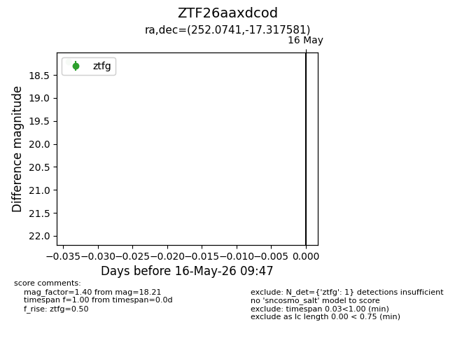
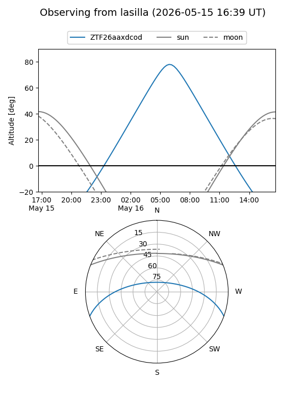
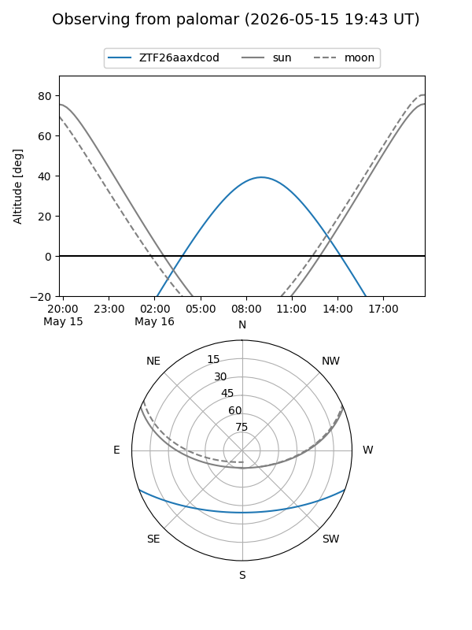

ZTF26aaxdcod
Target ZTF26aaxdcod at 2026-05-16 09:49
Aliases and brokers:
FINK: link
Lasair: link
ALeRCE: link
alt names
ZTF26aaxdcod (ztf,fink_ztf)
Coordinates:
equatorial (ra, dec) = 252.0741,-17.31758
equatorial (HMS+DMS) = 16:48:17.77,-17:19:03.29
galactic (l, b) = (2.1928,+17.40577)
Flags:
Photometry:
last ztfg=18.21
1 ztfg detections
Lightcurve

Visibility


Additional plots